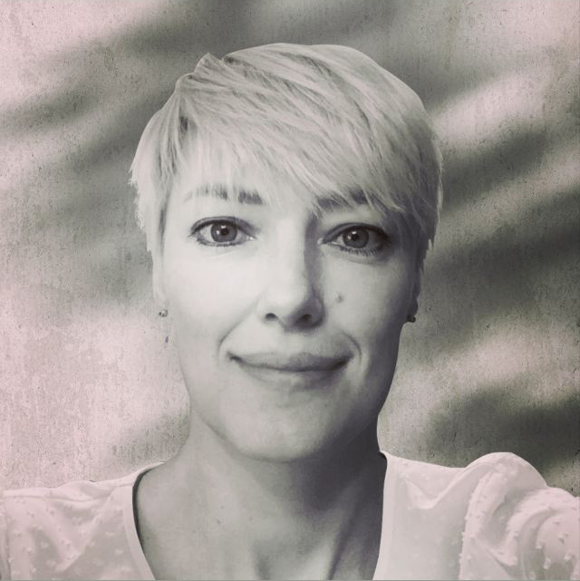

Tatyana Chernobuk
JS Frontend developer
Saratov, Russia
Contact me:
Mobile: +7 917 317 3514
Email: tvchernobuk@gmail.com
LinkedIn
|
Telegram
|
Behance
Hi, team!
My name is Tatyana. I am a designer with over 10 years of experience in print and advertising design,
as well as in the design of digital products.
2006 - 2011 - graphic designer;
2012 - 2017 - product designer;
2018 - present - web-designer, ux/ui designer.
I am constantly learning new things and improving my professional skills.
At the moment I want to change my profession and become a front-end developer.
Work experience
UX/UI Engineer
March 2019 - present. Saratov, Russia
- full cycle of project design development;
- market and product research — JTBD, CJM, timeline, corridor of restrictions;
- conducting qualitative research of target audience (an example can be found here);
- development of design solutions for websites and mobile applications;
- creation of a product design system;
- UX / UI audit;
- design of promotional materials for printing products and outdoor advertising;
- development of logos and brand books, creation of corporate identity elements;
- creation of animations;
- communication with the team in the general chat and control of tasks in Bitrix.
Web designer
September 2018 - March 2019. Saratov, Russia
- Website design, interface design;
- Development of brand identity, drawing of typical pages, teasers and icons;
- Creation of visual content (including animations) for social networks
and targeted advertising;
- Communication with the team in the general chat and control of tasks in Trello.
Web designer, product designer
April 2018 - September 2018. Moscow, Russia
- website design creation;
- development of brand identity, rendering of teasers and icons;
- development of visual content for communities in VK, Instagram, YouTube
and targeted advertisements for Hier, Tissot, UFS, Play Doh, Svitlogorye;
- Design of advertising materials, static and animated banners;
- Working with companies Hier, Tissot, UFS, Play Doh, Svitlogorye, etc.
- development of design layouts for various printing products;
- development of layouts for outdoor advertising;
- preparation of layouts for printing
Product designer
August 2012 - November 2017. Saratov, Russia
- Development of corporate identity elements, expansion and support of the design system;
- Design, layout, production of layouts, prepress;
- Manufacturing quality control printing products: posters, booklets, leaflets, magnets, diplomas, certificates,
etc.
Languages
Russian (Native)
English (Intermediate, b1)
Skills
- UI/UX
- Prototyping
- Graphic design
Tools
- Figma
- Adobe Photoshop
- Adobe Illustrator
- After Effects
- Learning HTML, CSS